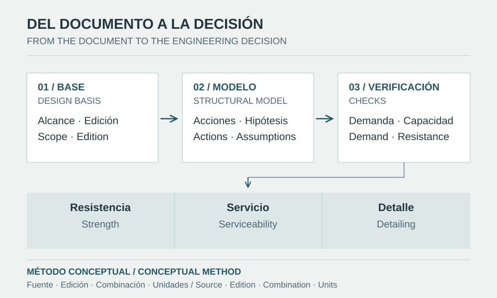

Code application begins with jurisdiction, scope and edition. Each requirement must then connect to a compatible model, an identifiable demand and a documented check.

Figure provenance
- Source
- Original editorial vector diagram prepared for this note.
- Tool
- SVG
- Date
- 2026-10-08
- Description
- Sequence from design basis and model to strength, serviceability and detailing checks, with source and edition records.
- Usage
- Conceptual review method; not a reproduced code table or evidence of project approval.
Start with the design basis
Applying a code requires more than selecting its name in software. The design basis identifies jurisdiction, occupancy, resisting system, materials, site conditions and contractual requirements. It also distinguishes new construction, assessment of existing structures and intervention. These decisions determine which documents govern and which provide supporting guidance.
Record designation, edition, amendments, official source and the reason for applicability. A newly published edition may support a review of changes without becoming the edition adopted for a submission. Current references in this note are not retrospectively attributed to portfolio projects.
Connect actions, analysis and materials
For a Peruvian concrete building, E.020 addresses loads, E.030 the seismic basis, E.060 concrete design and detailing, and E.050 geotechnical and foundation matters [1]. Assumptions and transfers between disciplines must be coordinated. E.030 2026 is linked to Resolution 183-2026 and its transitional provision as amended by Resolution 217-2026 [2–3].
ACI 318-25 is a verified reference for concrete; AISC 360-22 for structural steel; ASCE 7-22 for actions and associated criteria [4–6]. Publication does not establish local adoption or permit selective mixing of requirements from different editions. Official supplements and errata also need review [6–7].
Three decisions to make explicit
In concrete, obtaining internal forces does not resolve reinforcement anchorage or deformation compatibility. In steel, a member demand/capacity ratio does not verify its connection or bracing. ASCE 41-23 and ACI 562-25 have distinct assessment scopes [8–9]; transferring a new-design checklist to an existing system is insufficient.
| Conceptual case | Modelling decision | Verification/documentation |
|---|---|---|
| Concrete building | Consistent masses, effective stiffness and diaphragms | Drift, members, detailing and transfer to foundations |
| Industrial steel | Equipment actions, stability and connection flexibility | Members, connections, serviceability, anchors and erection |
| Assessment and retrofit | As-built condition and uncertain properties | Performance objective, mechanisms and intervention compatibility |
Keep strength and serviceability checks distinct
A strength check compares compatible demand and resistance. LRFD identifies factored demand and design strength; ASD uses the corresponding demand and allowable strength. Action combinations and limit-state evaluation belong to the adopted framework. Comparing LRFD demand with ASD allowable strength changes the intended basis.
In a purely conceptual example, assume Mu = 120 kN·m and a previously determined design strength of 150 kN·m: the ratio is 0.80. In a separate check, an 8 mm service deflection is compared with an assumed project criterion of 16 mm: the ratio is 0.50. No section or connection has been designed, and 16 mm is not presented as a general code limit.
Programming a rule requires preserving its scope
Before automation, define a verification record: member and location, action or combination, limit state, units, clause and edition, parameters and exceptions. Classify the outcome as checked, not applicable or pending. Missing information does not establish compliance.
The downloadable cantilever illustrates this boundary: it calculates equilibrium, deflection and elastic stress from stated assumptions. A stress-to-reference ratio does not replace buckling, interaction, fatigue or detailing checks. Python can produce data for code review; selecting the criterion remains a separate engineering decision.
Common mistakes and review close-out
A reviewable record connects each decision to its inputs, applicable document and construction consequence. Approval of an isolated calculation does not establish that continuity.
- Citing a code without recording edition, adoption or errata.
- Treating a technical guide as a mandatory requirement.
- Using an envelope of maxima as a simultaneous equilibrium state.
- Closing a strength review without documenting serviceability, stability and details.
Sources and references
- MVCS — National Building Regulations: official index and E.020, E.050 and E.060 texts
E.050: Resolution 406-2018-VIVIENDA; E.060: Decree 010-2009-VIVIENDA. The portal publication date is not a new edition of every standard.
- MVCS — Ministerial Resolution 183-2026-VIVIENDA, amendment to N.T. E.030 and the 2026 E.030 text; resolution of 28 April 2026
Resolution approved on 28 April 2026 and its official annexes. Applicability is reviewed together with its amended transitional provision.
- MVCS — Ministerial Resolution 217-2026-VIVIENDA, amendment to the transitional provision of Resolution 183-2026; resolution of 2 June 2026
Resolution of 2 June 2026 amending the transitional provision of Resolution 183-2026-VIVIENDA; it is not presented as another technical edition of E.030.
- ACI CODE-318-25 — Building Code for Structural Concrete: Code Requirements and Commentary (2025)
Reference edition verified through ACI's official portal; its use in earlier projects or automatic adoption in Peru is not implied.
- ANSI/AISC 360-22 — Specification for Structural Steel Buildings (2022)
2022 edition of the general specification. Its applicability and errata should be identified in the project's design basis.
- ASCE/SEI 7-22 — Minimum Design Loads and Associated Criteria for Buildings and Other Structures (2022)
Official portal with supplements and errata. The design basis must identify which apply to the project and their adoption status.
- AISC — Revisions and Errata, official listing (reviewed 2026-10-08)
Official listing reviewed on 8 October 2026. Before design, check the corrections corresponding to each edition used.
- ASCE/SEI 41-23 — Seismic Evaluation and Retrofit of Existing Buildings (2023), official overview
Official overview of the 2023 edition. Consult the full text and its adoption status to establish specific objectives and criteria.
- ACI CODE-562-25 — Assessment, Repair, and Rehabilitation of Existing Concrete Structures (2025), official listing and scope
Official listing for the 2025 edition addressing existing concrete structures. This note distinguishes its scope from seismic evaluation of buildings.